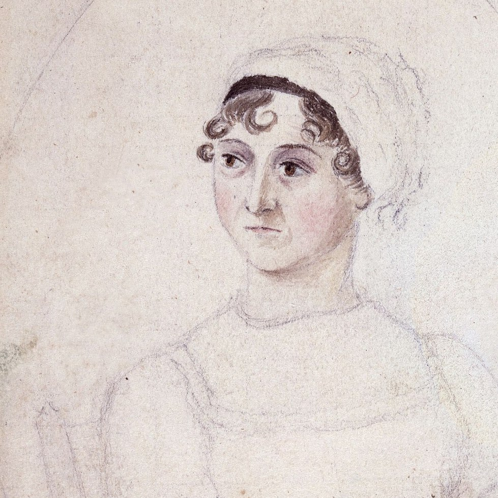

Jane Austen

overview
Jane Austen (1775-1817), one of England’s foremost novelists, was never publicly acknowledged as a writer during her lifetime.
Austen was born on December 16, 1775, at Steventon Rectory in Hampshire, the seventh child of a country clergyman and his wife, George and Cassandra Austen. Her closest friend was her only sister, Cassandra, almost three years her senior.
education and influences
Jane Austen was primarily educated at home, benefiting from her father’s extensive library and the schoolroom atmosphere created by Mr. Austen’s live-in pupils.
Though she lived a quiet life, she had unusual access to the greater world, primarily through her brothers. Francis (Frank) and Charles, officers in the Royal Navy, served on ships around the world and saw action in the Napoleonic Wars. Henry, who eventually became a clergyman like his father and his brother James, was an officer in the militia and later a banker. Austen visited Henry in London, where she attended the theater, art exhibitions, and social events and also corrected proofs of her novels. Her brother Edward was adopted by wealthy cousins, the Knights, becoming their heir and later taking their name. On extended visits to Godmersham, Edward’s estate in Kent, Austen and her sister took part in the privileged life of the landed gentry, which is reflected in all her fiction.
early works: 1787-1798
As a child Austen began writing comic stories, now referred to as the Juvenilia. Her first mature work, composed when she was about 19, was a novella, Lady Susan, written in epistolary form (as a series of letters). This early fiction was preserved by her family but was not published until long after her death.
In her early twenties Austen wrote the novels that later became Sense and Sensibility (first called “Elinor and Marianne”) and Pride and Prejudice (originally “First Impressions”). Her father sent a letter offering the manuscript of “First Impressions” to a publisher soon after it was finished in 1797, but his offer was rejected by return post.
bath and southampton years: 1801-1809
When Austen was 25 years old, her father retired, and she and Cassandra moved with their parents to Bath, residing first at 4 Sydney Place. During the five years she lived in Bath (1801-1806), Austen began one novel, The Watsons, which she never completed. After Mr. Austen’s death, Austen’s brothers contributed funds to assist their sisters and widowed mother. Mrs. Austen and her daughters set up housekeeping with their close friend Martha Lloyd. Together they moved to Southampton in 1806 and economized by sharing a house with Frank and his family.
mature novels and publishing success: 1809-1817
In 1809 Edward provided the women a comfortable cottage in the village of Chawton, near his Hampshire manor house. This was the beginning of Austen’s most productive period. In 1811, at the age of 35, Austen published Sense and Sensibility, which identified the author as “a Lady.” Pride and Prejudice followed in 1813, Mansfield Park in 1814, and Emma in 1815. The title page of each book referred to one or two of Austen’s earlier novels—capitalizing on her growing reputation—but did not provide her name.
Austen began writing the novel that would be called Persuasion in 1815 and finished it the following year, by which time, however, her health was beginning to fail. The probable cause of her illness was Addison’s Disease. In 1816 Henry Austen repurchased the rights to “Susan,” which Austen revised and renamed “Catherine.”
final months: 1817
During a brief period of strength early in 1817, Austen began the fragment later called Sanditon, but by March she was too ill to work. On April 27, 1817, she wrote her will, naming Cassandra as her heir. In May she and Cassandra moved to 8 College Street in Winchester to be near her doctor. Austen died in the early hours of July 18, 1817, and a few days later was buried in Winchester Cathedral. She was 41 years old. Interestingly, her gravestone, which is visited by hundreds of admirers each year, does not even mention that she was an author.
Persuasion and Northanger Abbey were published together in December 1817 with a “Biographical Notice” written by Henry, in which Jane Austen was, for the first time in one of her novels, identified as the author of Sense and Sensibility, Pride and Prejudice, Mansfield Park, and Emma.